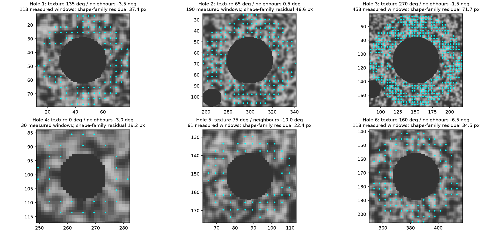
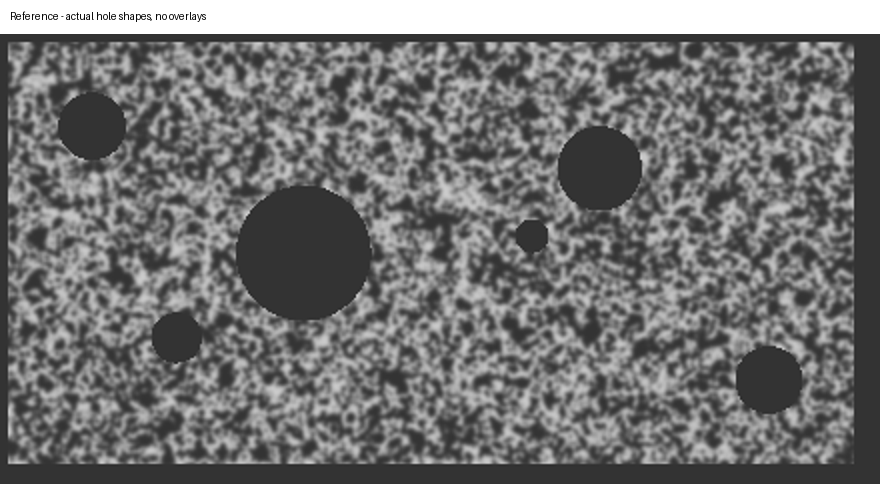

RBF : fonctions de base radiale gaussiennes. Essai de développement sur la plaque 191, mêmes 3 163 fenêtres déjà validées dans chaque ajustement. Aucun nouveau calcul de corrélation d'images numériques (DIC). Les formes contraignent le champ ; leur recouvrement n'est pas une preuve indépendante de justesse.
L'angle choisi uniquement par la texture est incertain. Une seconde estimation utilise les positions des fenêtres validées dans la couronne. Les deux hypothèses sont conservées pour comparaison. Le champ peut être faux entre observations, même si les trous paraissent bien corrigés.
| Variante | Écart aux graines (px) | Corrélation matière | Recouvrement des trous | Déterminants ≤0 |
|---|---|---|---|---|
| seeds_only | 1.82 | 0.819 | 0.853 | 0 |
| hole_centres | 1.82 | 0.817 | 0.852 | 0 |
| photo_affines | 37.34 | 0.432 | 0.331 | 3778 |
| neighbour_affines_w0.1 | 2.51 | 0.808 | 0.896 | 0 |
| neighbour_affines_w1 | 4.78 | 0.740 | 0.952 | 0 |
| neighbour_affines_w10 | 7.93 | 0.650 | 0.970 | 144 |
| neighbour_positions_only | 3.52 | 0.785 | 0.959 | 0 |
Les gradients issus des trous sont des extensions virtuelles dans le vide, pas des mesures dans la matière. Aucune borne n'est appliquée à leur amplitude. Toutes les images viennent des pixels natifs ; les sorties précédentes sont conservées.
Matrices affines de chaque trou et chiffres bruts · Référence

Référence puis cible remappée ; les trous affichés proviennent de la cible, sans masque circulaire ajouté.

Image remappée seule · RBF de référence / variante
Référence puis cible remappée ; les trous affichés proviennent de la cible, sans masque circulaire ajouté.
Image remappée seule · RBF de référence / variante
Référence puis cible remappée ; les trous affichés proviennent de la cible, sans masque circulaire ajouté.
Image remappée seule · RBF de référence / variante
Référence puis cible remappée ; les trous affichés proviennent de la cible, sans masque circulaire ajouté.
Image remappée seule · RBF de référence / variante
Référence puis cible remappée ; les trous affichés proviennent de la cible, sans masque circulaire ajouté.
Image remappée seule · RBF de référence / variante
Référence puis cible remappée ; les trous affichés proviennent de la cible, sans masque circulaire ajouté.
Image remappée seule · RBF de référence / variante
Référence puis cible remappée ; les trous affichés proviennent de la cible, sans masque circulaire ajouté.